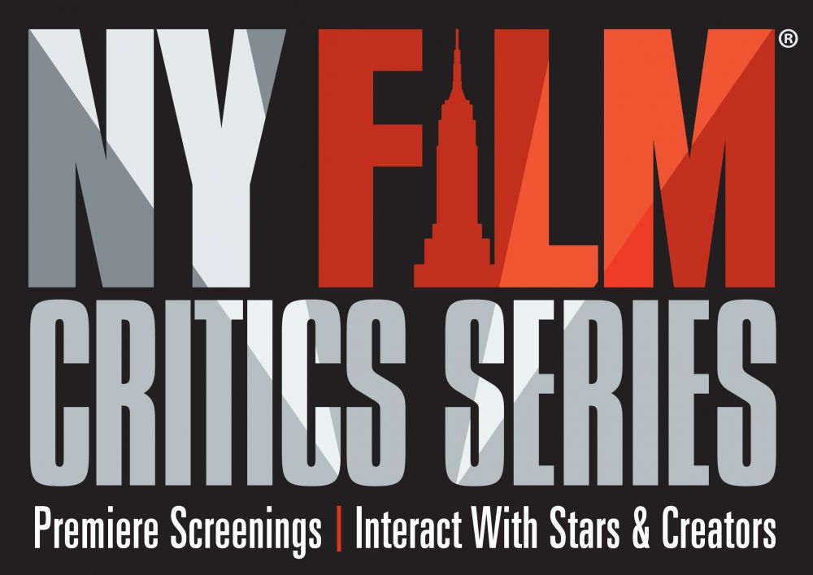

Ty Burr
Boston, MA
Ty Burr is a film critic and columnist for The Boston Globe and author of the critically acclaimed books Gods Like Us: On Movie Stardom and Modern Fame and The Best Old Movies for Families. He has been at The Globe since 2002; before that, he worked for Entertainment Weekly and at HBO. In addition, he is an adjunct professor in the Film & TV department at Boston University and in the Visual Media Arts department at Emerson College. He is a member of the National Society of Film Critics and the Boston Society of Film Critics. In 2017, he was a finalist for the Pulitzer Prize in Criticism.

Evan Crean
Somerville, MA
Evan Crean is the Lead Editor for The Independent. He is also co-author of the lighthearted self-help book Your ’80s Movie Guide to Better Living and co-host of the weekly film podcast Spoilerpiece Theatre. Additionally, Evan is the co-chair and treasurer of the Boston Online Film Critics Association (BOFCA). Previously, he contributed hundreds of movie reviews and celebrity interviews to Starpulse.com and has also been a contributor to NewEnglandFilm.com. You can follow him on his site Reel Recon or find him on Twitter as @reelrecon.
Moira Macdonald
Seattle, WA
Moira Macdonald has been the movie critic for The Seattle Times since 2001; in recent years, her beat has expanded to include books, dance, fashion, and other things that delight her. Before The Times, she was a staffer at Seattle Weekly and at Microsoft. An M.A. graduate of the University of Washington, she has taught arts criticism at Seattle University, and her work was recently included in Alicia Malone’s anthology “The Female Gaze: Essential Movies Made by Women.”

Tom Meek
Cambridge, MA
Tom Meek is the President of the Boston Society of Film Critics. He is a longtime contributor at The Boston Phoenix, Cambridge Day, the WBUR ARTery, and the Charleston City Paper. He has also appeared regularly on New England Cable News. His byline can also be found at E!-Online, Cineaste, Film Threat, and Web Del-Sol. Tom likes a harmonious universe and rides his bike everywhere. You can follow him on Twitter @TBMeek3.
Rubén Peralta Rigaud
Miami, FL
Rubén Peralta Rigaud was born in Santo Domingo in 1980. Doctor in Medicine by profession, and writer of cinematographic reviews, he was the host of a daily radio show named “Cineasta Radio” for three years, as well as a collaborator of Cineasta print magazine since 2010 and editor/writer of the portal Cocalecas for fifteen years. He gave talks on cinematographic appreciation and speaks openly about how important are films for our education. He has been a jury at Miami Film Festival, Toronto International Film Festival, and the Global Film Festival.
Currently, apart from the two mentioned media, he also collaborates for the Mexican websites Cultura Colectiva and SensaCine, for the digital newspaper Nota Clave and for the film section of the printed newspaper Listin Diario, both in the Dominican Republic. Ruben is a member of FIPRESCI, BFCA (Broadcast Film Critics Awards), FFCC (Florida Film Critics Circle), ICS (International Cinephile Society) and several other organizations related to promote and preserve films.
Gisela Savdie
Miami, FL
Gisela Savdie is a Colombian artist/writer living in Miami. She graduated as a Dentist from Javeriana University in Bogotá, Colombia, and later as an artist from the Miami International University of Art and Design. She has a Master of Arts from Barry University. She published a book in dentistry recognized as an Official Textbook by the World Health Organization. She was recognized as an Alien of Extraordinary Abilities and became a US Citizen in 2007. She published a photography and poetry book called Labradores de Sueños based on the Carnival in Colombia, which won First Place for Design in Art Books in Colombia. Film has always been her passion, and she’s been writing film reviews for the past 12 years in El Heraldo, a daily newspaper in Barranquilla, Colombia, and Letra Urbana, an online magazine in Miami. She covers The Cannes Film Festival and The Miami Film Festival annually and has covered the Sundance and Toronto Film Festivals on multiple occasions. In the past two years she was a Jury for the Critics Award at the Miami International Film Festival. She is a board member of the Miami Beach Film Society, and a member of the Florida Film Critics Circle.
Regina Scruggs
Houston, TX
Regina Scruggs is a film journalist, lecturer, and critic. She is a Founding Member of The Houston Film Critics Society. Regina’s career includes 40 years in radio broadcasting, including 25 years as Host and Producer of the weekly soundtrack show “Music From The Movies.” She has also been a classical music radio host, Program Director, Music Director, and Operations Manager. In 2019 Regina introduced “Duck Soup” at the Museum of Fine Arts, Houston; led a discussion of “Bonnie and Clyde” at the University of Houston; served on a grants panel at Houston Arts Alliance; and discussed “The Future of Cinema” on KUHF-FM’s magazine show, “Houston Matters.”
Michelle F. Solomon
Miami, FL
Michelle F. Solomon, M.A., is editor, and theater/film reviewer for Miami Art Zine, an online publication of the Miami Beach Arts Trust, covering the arts in Miami-Dade and Broward counties. She is also a contributor for Artburst Miami, Miami Herald, Fort Lauderdale Sun-Sentinel and Florida Theater On Stage. She is senior staff writer at luxury magazine Lifestyle publications in Fort Lauderdale. She is currently the Podcast writer, producer, reporter and host for WPLG-TV, Local 10’s (ABC-TV Miami affiliate) crime podcast, “The Florida Files,” which is on all podcast platforms including Apple Podcasts.
A graduate of Emerson College, Boston, Mass., with a master’s degree from the State University of New York, Michelle has been arts and entertainment at major and mid-sized newspapers, including executive arts editor of the Albany (N.Y.) Times Union and assistant features editor/entertainment at the Detroit (Mich.) Free Press. She was an on-air entertainment reporter and managing editor of new media for NBC affiliate, WDIV-TV, Detroit, and executive producer of new media at ABC affiliate, Miami’s WPLG-TV, Local 10. Her memberships include The American Theatre Critics Association (ATCA) and The Florida Film Critics Circle (FFCC). In whatever spare time she has (nope, she never sleeps), she performs her original stand-up comedy throughout South Florida.
Gary K. Wolf
Brookline, MA
Gary Wolf is an award winning science fiction and fantasy writer. He created the concept of Toontown, bringing to life its beloved inhabitants: Roger Rabbit, Roger’s va-va-voom mate, Jessica Rabbit, Baby Herman, and hard-boiled private eye, Eddie Valiant. Wolf’s first Toontown novel, Who Censored Roger Rabbit? became a visual reality in Disney/Spielberg’s blockbuster film, Who Framed Roger Rabbit? The film won four Academy Awards and grossed $1 billion dollars. Walt Disney Pictures has purchased film rights to his second Toontown novel, Who P-p-p-plugged Roger Rabbit? He recently published a third Toontown novel, Who Wacked Roger Rabbit?
Gen Z Critics is proud to partner with:
